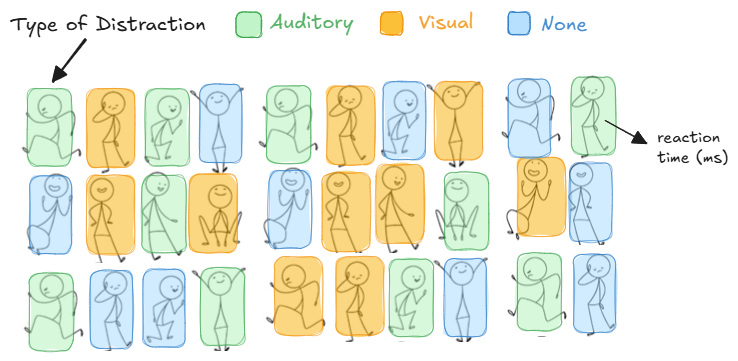
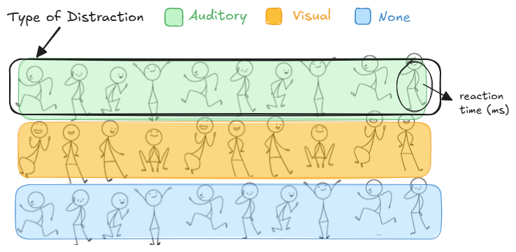

knitr::include_graphics("_images/reaction-time-crd.png")
Basic Terminology + Blueprints
“If the design of an experiment is faulty, any method of interpretation which makes it out to be decisive must be faulty too.”
– Fisher, 1935, Design of Experiments
Our Goal: How to obtain useful data and work with it.
In any experiment, variation is inevitable and it can stem from:
Identifying and accounting for these sources is essential to ensure that the observed effects reflect real differences, not random noise.
Reaction time is the time taken to respond to a stimulus. Suppose we would like to study reaction time in human adults. We recruit 30 adults. Each participant sits at a computer and is instructed to press the space bar as quickly as possible when a visual stimulus (a green circle) appears on the screen. Reaction time (in milliseconds) is recorded for each participant.
Treatment structure (Treatment Design): Set of treatments, factors, treatment combinations, or populations that the experimenter has selected to study and/or compare - the “what” of the experiment.
Design structure (Experimental Design): Grouping of the experimental units into similar groups of blocks - the “how” of the experiment.
| Structure Type | Example Methods |
|---|---|
| One-way | One-way ANOVA, Simple Linear Regression |
| Two-way and n-way | n-way ANOVA, Factorial Designs, Multiple Regression |
| Structure Type | Example Methods |
|---|---|
| Completely Randomized | CRD |
| One-way Blocked | RCBD, BIBD, IBD |
| Two-way Blocked | Latin Square, Youden Square |
| Split Plot (Repeated Measures) | Split plot designs, repeated measures designs |
Factor: An explanatory (or independent) variable to be studied in an investigation.
Level: A particular form of a factor.
Treatment: A treatment is determined by the set of factors and the levels of each factor.
Response: Something you measure during or after an investigation.
NOTE: A factor HAS an effect on the response if different levels of the factor produce differing responses!
Now suppose that the experiment is conducted to determine what (if any) impact the type of distraction has on reaction time. Three different types of distraction (auditory, visual, and none) are used in the experiment.
Factor(s):
Level(s):
Response(s):
A treatment corresponds to the levels. Thus, this experiment has 3 treatments which are…
The number of replications in an experiment is the number of experimental units per treatment or treatment combination. An experiment is said to be replicated if each treatment is applied independently to each of two or more experimental units.
Experimental Unit (e.u.): The smallest unit of experimental material to which a treatment is independently assigned.
Measurement Unit (m.u.): The unit at which the response is measured (aka: sampling unit). This may involve subsampling within an experimental unit.
Experimental Error: Differences that occur from one repetition (or replication) of an experiment to another.
NOTE: Replication makes it possible to estimate the variance of the experimental error.
Additional information: Each individual completes one task under their assigned distraction condition.
Identify the experimental unit (e.u.)
Measurement/Sampling unit (m.u.):
How many replications exist per treatment? r = _______
knitr::include_graphics("_images/reaction-time-crd.png")
Treatment structure: One-way treatment structure with 3 levels of distraction type (auditory, visual, and none) making up the 3 treatments.
Experimental structure: Distraction type is assigned to each individual (e.u.) in a completely randomized design (CRD) with r = 10. The reaction time (ms) is measured on each individual (m.u.).
Additional information: Now suppose the researchers want to increase their sample size by having each of the 30 individuals repeat their task 5 times under their assigned distraction condition, resulting in 150 reaction times.
Identify the experimental unit:
Measurement unit:
How many replications exist per treatment?
Subsampling – taking multiple measurement units from the same experimental unit.
Treating these measurements as independent inflates the sample size, leading to overoptimistic results and increased type I errors.
It is best practice to aggregate subsamples (e.g., average) to get one response per experimental unit and ensure the analysis reflects the true number of experimental units.
Now suppose that instead of assigning distraction types individually, we place 10 individuals in a room at a time and apply the same distraction type to the entire group. This process is repeated three times – once for each distraction type.
Identify the experimental unit:
Measurement unit:
How many replications exist per treatment?
knitr::include_graphics("_images/reaction-time-unreplicated.png")
Unreplicated Designs – a study design with experimental unit replication of r = 1 causes issues since we cannot estimate the experimental error.